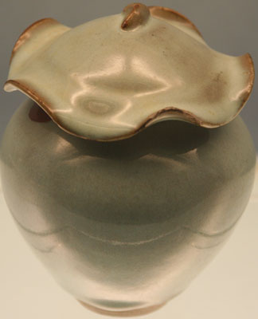

{kind=link}
白地黑花瓷枕
磁州窑 金（1115〜1234） 北京首都博物馆
Black painted porcelain pillow with white base
Cizhou Kiln, Jin Dynasty (1115—1234), Capital Museum, Beijing
The Jun Kilns 钧窑 were well known in the Song and early Yuan. There were Jun Kilns all over Henan province. The kilns at Juntai and Baguadong produced porcelain for the Imperial Palace. The Jun Kilns used a translucent glaze colored with copper or iron to give a moon-white, sky-blue, rose-purple, or crab apple-red colors. Careful control of firing temperature, atmosphere, and glaze ingrdients was needed to create these colors. The June kilns also used very thick glaze. A jar from the Jun Kilns is shown below.


{kind=link}
月白釉荷叶盖罐
金〜元初 （1115〜1300） 钧窑 上海博物馆
Moon-white glazed jar with a lotus leaf shaped lid
Jun Kiln, Jin — Early Yuan Dynasty (1115—1300), Shanghai Museum
In the peony design below a dark glaze was applied and then the background for the design picked out to leave the peony raised above the background.

黑釉剔刻牡丹纹罐
金（1115〜1234年） 上海博物馆
Dark glazed jar with incised peony design
Jin — Early Yuan Dynasty (1115—1300), Shanghai Museum